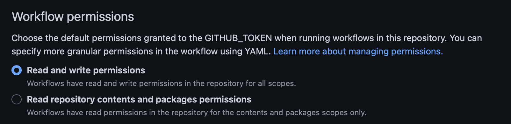

Overview¶
The gotchas I found while deploying mkdocs to github pages.
Github Action Permissions¶
Add the necessary Permissions to do write operations in the action:

This allows you to write back to the current repo you are working in. This is the part that I missed when I was first trying to set this up.
Configure Github Actions to build your site¶
I use poetry to manage my dependencies because of that I have to also ensure poetry is installed. The following yaml ensures poetry is installed, install the project dependencies, then deploys the github pages site.
name: Deploy Mkdocs Site
on:
push:
branches:
- main
concurrency:
group: deployment
jobs:
Run-Code-Validation:
runs-on: ubuntu-latest
steps:
- uses: actions/checkout@v3
- name: Install Poetry
uses: snok/install-poetry@v1
- name: Set up Python 3.11
uses: actions/setup-python@v4
with:
python-version: 3.11
cache: 'poetry'
- name: Install dependencies
run: poetry install
- name: Deploy Site
run: poetry run mkdocs gh-deploy --force --clean